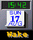

Important Concepts: Project Planning
Before starting this tutorial, you should review the information in Beans in Java WorkShop. Bean components provide the means to write Java code--and to use that code again and again.
The exercises in Tutorial 8 show you how to create a digital clock that displays the current time and date. The Clock project will contain the following beans:
- Clock. Displays the time and date.
- Marquee. Displays a scrolling message.
- SoundPlayer. Plays an audio sound.
The DeskClock project uses the beans listed above to create the clock application.
The clock application will look like this:

 Next lesson:
Next lesson:
- Exercise 1: Copying the Project Source Files